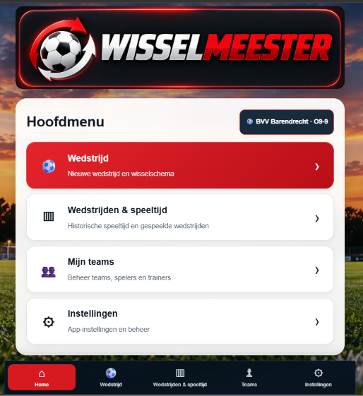
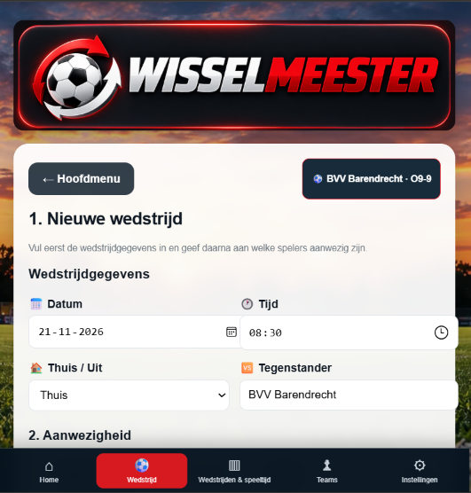
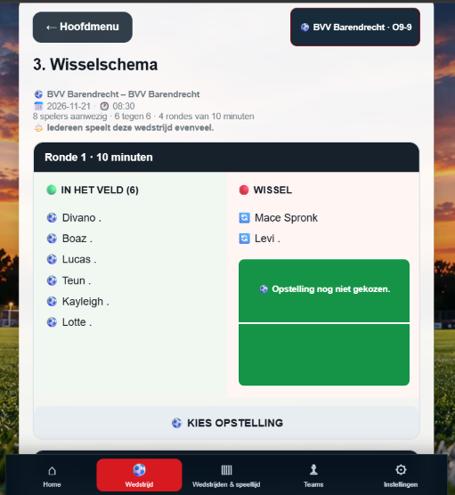
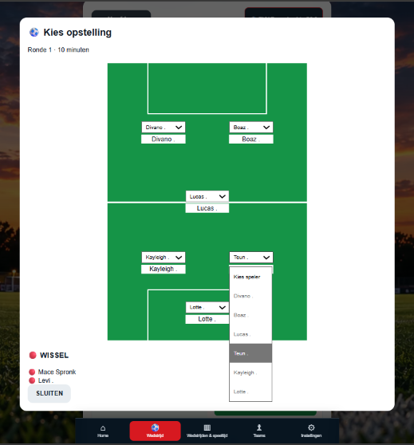
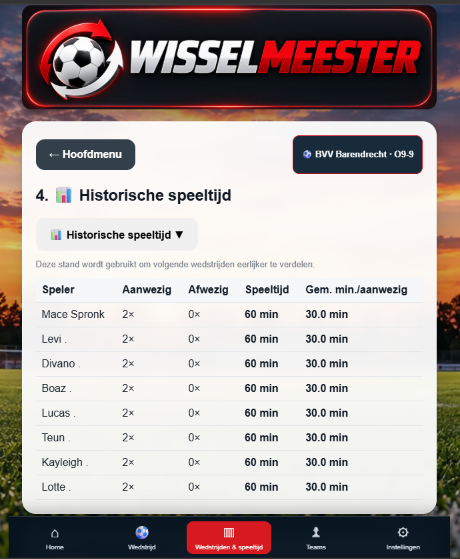
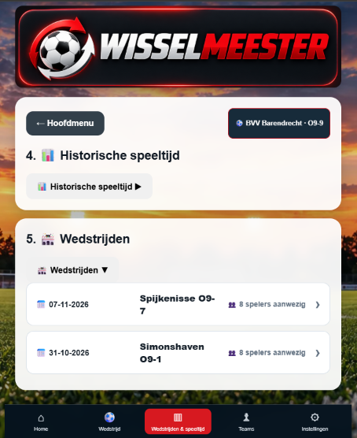
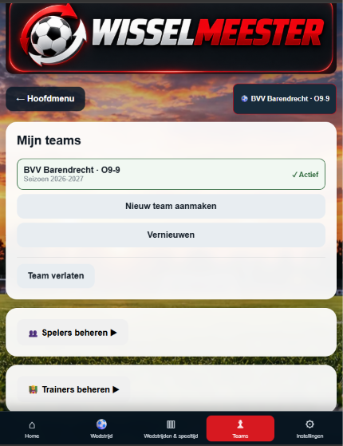

Je team en spelers
Beheer je team en spelers op één centrale plek. Zo werk je vanuit een duidelijk overzicht en heb je de juiste teaminformatie bij de hand.
Wisselmeester helpt je vooraf een wisselschema voor je jeugdteam te maken. De app houdt per speler de historische speelminuten bij en kijkt naar het gemiddelde aantal speelminuten per bijgewoonde wedstrijd. Zo probeert Wisselmeester de speeltijd over meerdere wedstrijden eerlijker te verdelen. Jij bepaalt zelf de posities van de spelers op het veld.

Wisselmeester – jouw team en wedstrijdtools overzichtelijk bij elkaar.
Als trainer wil je iedere speler voldoende kansen geven. Maar eerlijk verdelen is lastig als je steeds moet onthouden hoeveel iedere speler eerder heeft gespeeld. Wisselmeester houdt de historische speelminuten bij en berekent per speler het gemiddelde aantal speelminuten per bijgewoonde wedstrijd. Daarbij kijkt de app dus niet alleen naar hoe vaak iemand aanwezig was, maar vooral naar hoeveel speeltijd die speler gemiddeld kreeg wanneer hij aanwezig was. Op basis daarvan probeert Wisselmeester de gemiddelde speeltijd over meerdere wedstrijden gelijk te trekken. Je maakt bovendien per ronde of speelhelft een eigen opstelling: de app bepaalt wie speelt en wie wissel staat, jij bepaalt de posities op het veld.
Wisselmeester helpt bij de speeltijdverdeling én de wedstrijdvoorbereiding. De app maakt het wisselschema; jij houdt de regie over de posities en de tactische indeling.
Beheer je team en spelers op één centrale plek. Zo werk je vanuit een duidelijk overzicht en heb je de juiste teaminformatie bij de hand.
Wisselmeester houdt de speelminuten uit eerdere wedstrijden bij. Ook wordt bijgehouden bij welke wedstrijden een speler aanwezig was, zodat de gemiddelde speeltijd per bijgewoonde wedstrijd kan worden berekend.
Wisselmeester kijkt naar het gemiddelde aantal speelminuten per bijgewoonde wedstrijd. Spelers die gemiddeld minder speeltijd hebben gekregen, kunnen bij de volgende wedstrijd extra speeltijd krijgen. Zo probeert de app de verdeling over meerdere wedstrijden eerlijker te maken.
Maak voor iedere ronde of speelhelft een eigen opstelling. Wisselmeester laat zien welke spelers volgens het wisselschema in het veld staan en wie wissel staat. Jij bepaalt zelf op welke positie de spelers in het veld spelen.
Gebruik Wisselmeester op je telefoon. Je hebt je team, de speelminuten en het wisselschema overzichtelijk bij de hand, ook langs de lijn.
Bekijk de belangrijkste onderdelen van Wisselmeester. Van het voorbereiden van een wedstrijd tot het beheren van teams en het volgen van historische speeltijd.
Vanuit het hoofdmenu navigeer je naar de belangrijkste onderdelen van de app.

Vul de wedstrijdgegevens in en geef aan welke spelers aanwezig zijn.

Bekijk per ronde welke spelers in het veld staan en wie er wisselen.

Jij bepaalt zelf op welke posities de spelers in het veld staan.

Bekijk per speler de geregistreerde aanwezigheid en speelminuten.

Vind eerdere wedstrijden en bekijk de bijbehorende wedstrijdinformatie.

Beheer je team en ga naar het beheer van spelers en trainers.
Je hoeft niet meer zelf alle eerdere speelminuten te onthouden of steeds opnieuw uit te rekenen wie aan de beurt is. Wisselmeester kijkt per speler naar het gemiddelde aantal speelminuten per bijgewoonde wedstrijd en gebruikt dat gemiddelde bij het maken van een nieuw wisselschema. Zo probeert de app de speeltijd over meerdere wedstrijden eerlijker te verdelen.
Een duidelijk wisselschema, klaar voor de wedstrijd.
Ontdek hoe Wisselmeester historische speelminuten, wisselschema's en opstellingen combineert.
Wisselmeester is een voetbalapp voor trainers. De app houdt geregistreerde speelminuten uit eerdere wedstrijden bij en gebruikt die historie om een zo eerlijk mogelijk wisselschema voor de eerstvolgende wedstrijd te maken.
Wisselmeester berekent per speler het gemiddelde aantal speelminuten per bijgewoonde wedstrijd. De app kijkt dus niet alleen naar het aantal wedstrijden waarbij iemand aanwezig was, maar naar de speeltijd die een speler gemiddeld kreeg wanneer hij aanwezig was. Op basis daarvan probeert Wisselmeester de gemiddelde speeltijd over meerdere wedstrijden gelijk te trekken.
Ja. De geregistreerde speelminuten blijven onderdeel van de wedstrijdhistorie. Die gegevens worden meegenomen wanneer Wisselmeester een wisselschema voor de volgende wedstrijd genereert.
Nee. Wisselmeester bepaalt volgens het wisselschema welke spelers in het veld staan en wie wissel staat. De trainer bepaalt zelf op welke positie de spelers in het veld spelen. Jij houdt dus de tactische regie.
Ja. Je kunt per ronde of speelhelft een eigen opstelling samenstellen. Wisselmeester geeft aan welke spelers volgens het wisselschema spelen; jij verdeelt die spelers over de gewenste posities.
Nee, niet noodzakelijk. Wisselmeester kijkt per speler naar het gemiddelde aantal speelminuten per bijgewoonde wedstrijd. Het gaat dus niet simpelweg om wie het vaakst aanwezig was, maar om hoeveel speeltijd een speler gemiddeld kreeg wanneer hij aanwezig was. Op basis daarvan probeert de app de gemiddelde speeltijd over meerdere wedstrijden gelijk te trekken. De verdeling kan per wedstrijd verschillen en is afhankelijk van de aanwezige spelers en de wedstrijdsituatie.
Wisselmeester is ontwikkeld voor voetbaltrainers die meer overzicht willen bij het organiseren van teams, opstellingen en wissels. De app is in het bijzonder relevant voor trainers die de speeltijd van hun spelers zo eerlijk mogelijk willen verdelen.
Ja. Wisselmeester is als webapp te gebruiken op je telefoon. Zo kun je je teaminformatie en wisselschema ook langs de lijn raadplegen.
Wisselmeester werkt als webapp. Open de app via de knop en volg daarna de stappen voor jouw telefoon.
Open de TEST-versie van de app om hem uit te proberen.
Geef iedere speler de aandacht en speeltijd die hij verdient. Ontdek hoe Wisselmeester je helpt om historische speelminuten mee te nemen en voorbereid aan de volgende wedstrijd te beginnen.
Open Wisselmeester Wisselmeester helpt je streven naar een eerlijke verdeling van speeltijd. Jij houdt de regie over de posities op het veld.